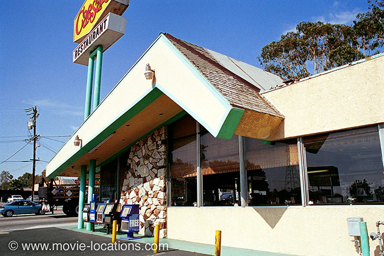
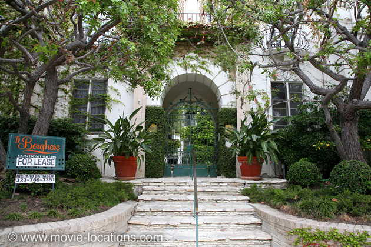
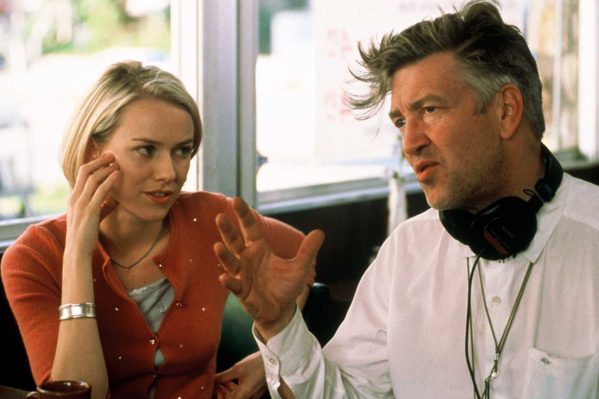
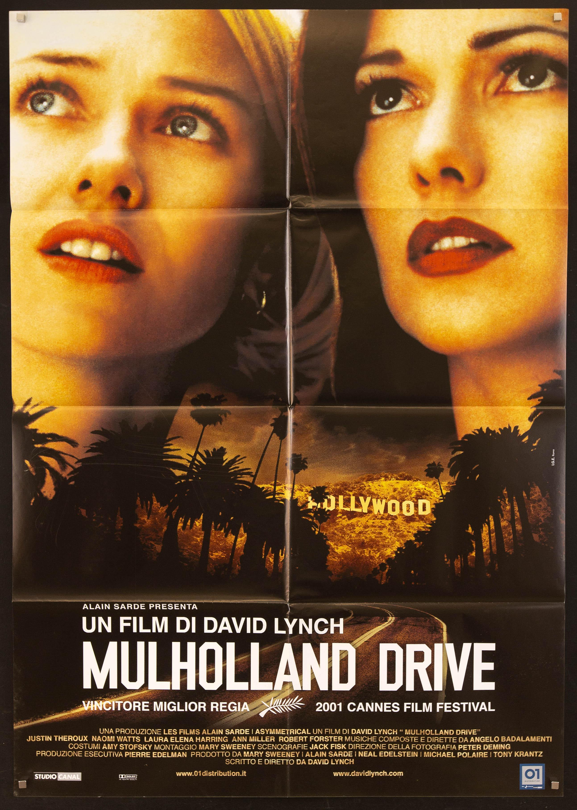
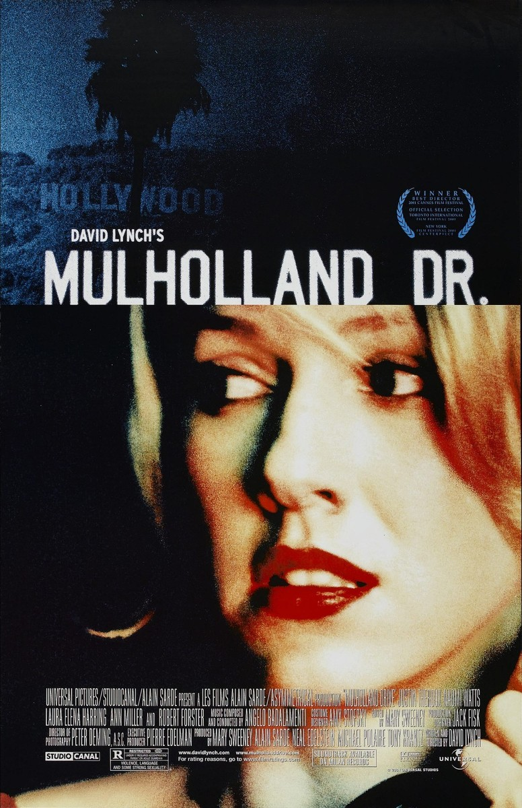

Mulholland Drive, released in 2001, is a masterpiece and a defining peice of the 2000s. This movie has made me fall in love with the art of cinema, so I made a website dedicated to it. David Lynch, the director, has made mesmerising pieces of art over the years, Lost Highway, Blue Velvet, Inland Empire, Twin Peaks and Twin Peaks FWWM. But Mulholland Drive is arguably his best work and maybe most impactful.
Locations
 As the title of the movie suggests the movie was filmed in Los Angeles and yes, Mullholland Drive. For example, Aunt Ruth's house where we see Betty and Rita stay at is located in Rosewood Avenue, Hollywood and other locations like Winkie's Diner is located in Gardena, Los Angeles. David Lynch in his works does not hide the fact he is fascinating with the city of Los Angeles and is a key part to his stories. Mulholland Drive location is crucial to the story the myths and mysterys of Hollywood and Los Angeles is what brings this story together.
David Lynch
Born in January 20, 1946 and Died January 16, 2025. David Lynch directed Mullholland Drive when he was 55 years old. Directed other movies such as Blue Velvet, Eraserhead, Twin Peaks FWWM, Dune, etc.
 